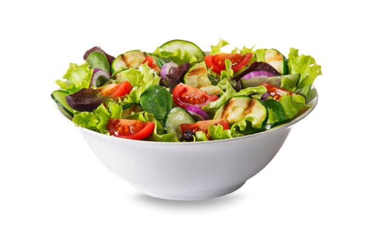

Green salad
Green salad amounts
Option.
tomatoes
Onions are green.
white onions.
mint or parsley.
olive oil.
Fresh lemonade.
Salt, to taste.
How to prepare it
Make sure to wash the vegetables well before you start cutting them.
Cut and chop the vegetables with their skins into cubes of the size that suits you.
Mix all of the above ingredients well in a large bowl.
Add a little olive oil, lemon and salt to the chopped vegetables.
Re-mix all of the above ingredients and it is ready to be served.
